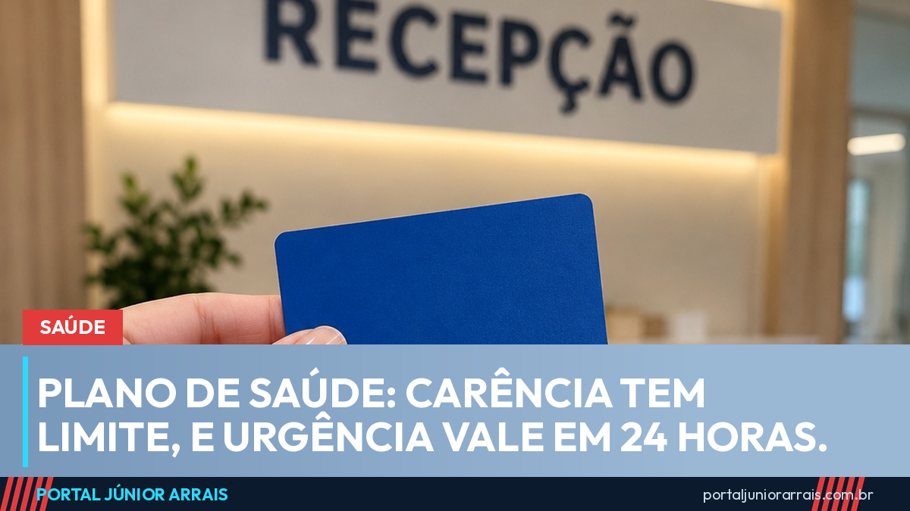
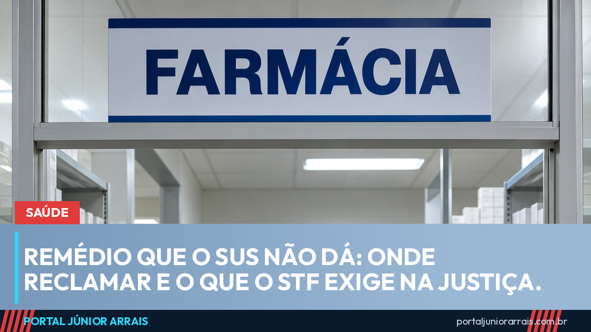
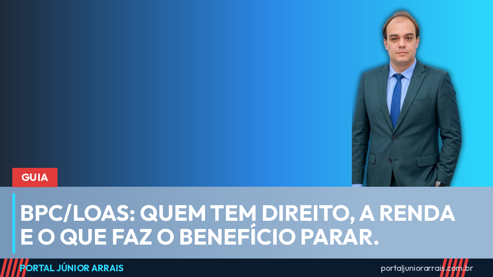
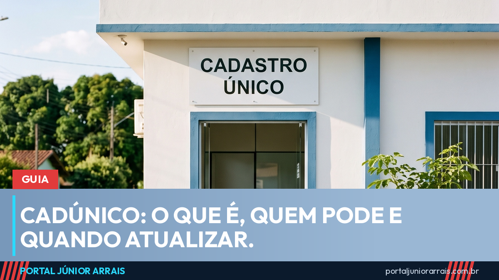
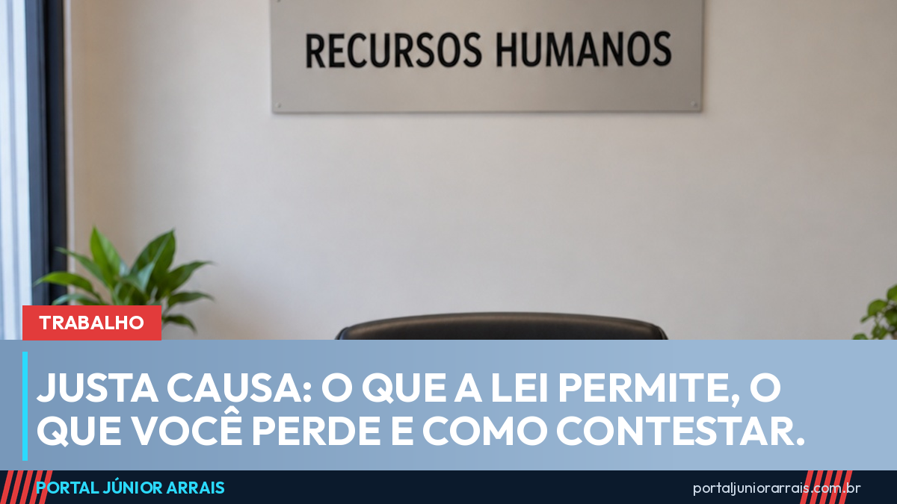
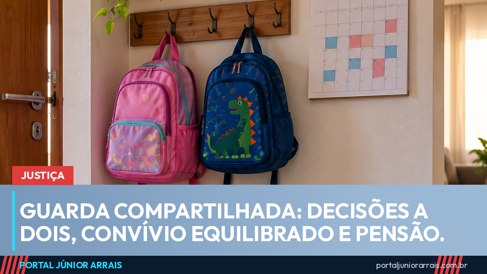
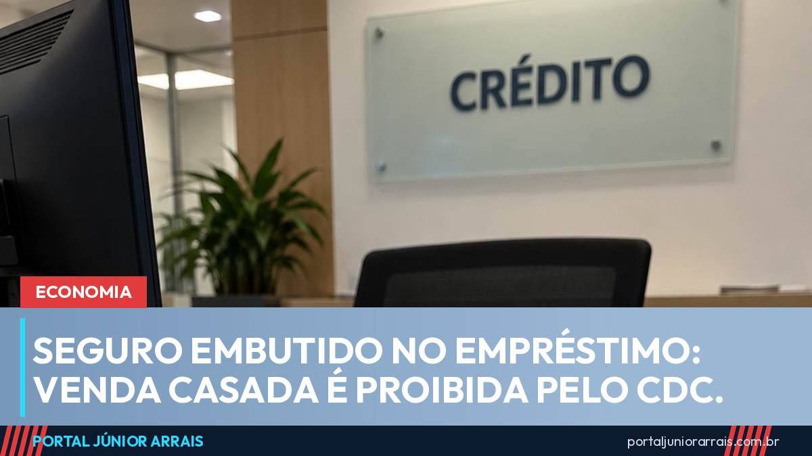
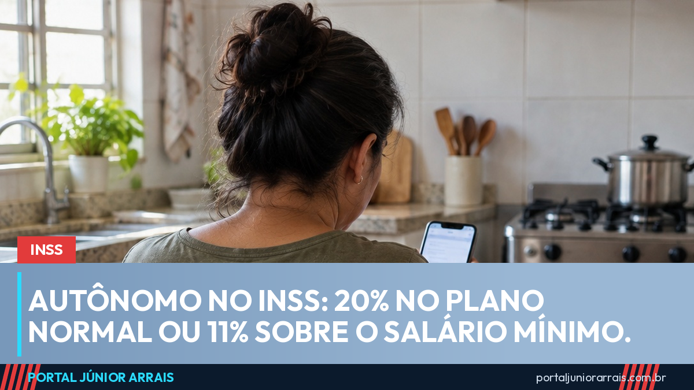

Novo · Calculadora
Calcular agora
Quanto sua família vai receber do Bolsa Família a partir de outubro?
Informe quem mora na sua casa e veja o valor de hoje e o valor com o reajuste de 15,04%.

INSS em atraso: quando dá para pagar a contribuição e quando ela conta para a carência
Herança sem testamento: quem herda primeiro, a parte do cônjuge e como fazer o inventário
Como pagar o INSS sem perder o Bolsa Família em 2026: veja o passo a passo
Inscreva-se no canal → Golpe do Pix: como o MED funciona e quando o banco pode devolver o dinheiro
Demissão por acordo: metade do aviso, multa de 20% do FGTS e nada de seguro-desemprego
União estável: o que caracteriza, como registrar no cartório e quais direitos ela dá
Golpe do Pix: como o MED funciona e quando o banco pode devolver o dinheiro
Demissão por acordo: metade do aviso, multa de 20% do FGTS e nada de seguro-desemprego
União estável: o que caracteriza, como registrar no cartório e quais direitos ela dá

Plano de saúde: carências máximas, doença preexistente e o que fazer diante da negativa Insalubridade e periculosidade: quem recebe, quanto vale e por que não dá para somar
Remédio que o SUS não fornece: o que fazer quando falta e quando está fora da listaYouTube Shorts
Ver todos → Que dia os aplicativos do Bolsa Família vão atualizar para novembro? Veja as datas.
Que dia os aplicativos do Bolsa Família vão atualizar para novembro? Veja as datas.
 DESENROLA 3.0: o que saiu no DIÁRIO OFICIAL e quando chega a sua vez.
DESENROLA 3.0: o que saiu no DIÁRIO OFICIAL e quando chega a sua vez.
 Trabalho por hora é bom ou ruim? Veja a minha análise
Trabalho por hora é bom ou ruim? Veja a minha análise
 Novidades para o mei - microempreendedor individual - veja o que muda com a nova lei.
Novidades para o mei - microempreendedor individual - veja o que muda com a nova lei.
 Acredita no primeiro passo: banco alemão reforça empréstimo de até r$ 21 mil para CadÚnico
Acredita no primeiro passo: banco alemão reforça empréstimo de até r$ 21 mil para CadÚnico
Guias do portal
Ver todos os guias →
Bolsa Família
Bolsa Família: quem tem direito, quanto recebe, regra de proteção e o que bloqueia o benefício

BPC/LOAS
BPC/LOAS: quem tem direito, o limite de renda, a avaliação do INSS e o que faz o benefício parar

Benefícios
CadÚnico: o que é, quem pode se inscrever, quando atualizar e quais benefícios dependem dele
Pé-de-Meia
Pé-de-Meia: quem tem direito, quanto o estudante recebe, o que trava a conta e o calendário
Últimas notícias

Direitos
Corte de luz e de água por falta de pagamento: aviso, dias proibidos e prazo de religação

Trabalho
Justa causa: os motivos da lei, o que o trabalhador perde e como contestar na Justiça

Justiça
Guarda compartilhada: quando é a regra, como fica a convivência e por que a pensão continua

Economia
Seguro embutido no empréstimo: quando é venda casada e como pedir o dinheiro de volta

INSS
Autônomo no INSS: plano de 20% ou de 11%, o que cada um cobre e como pagar

Bolsa Família